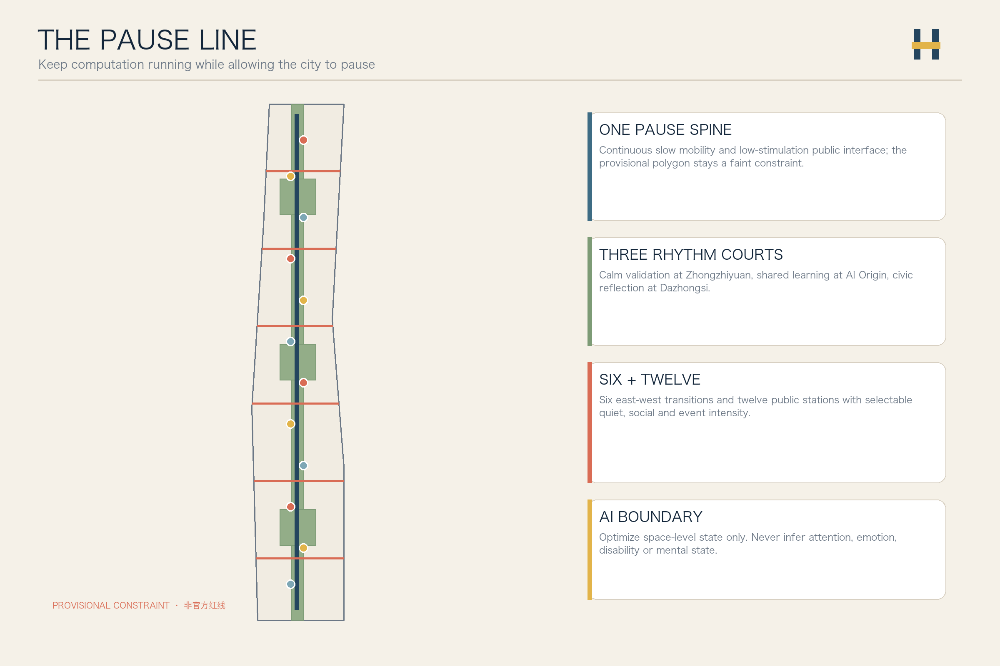
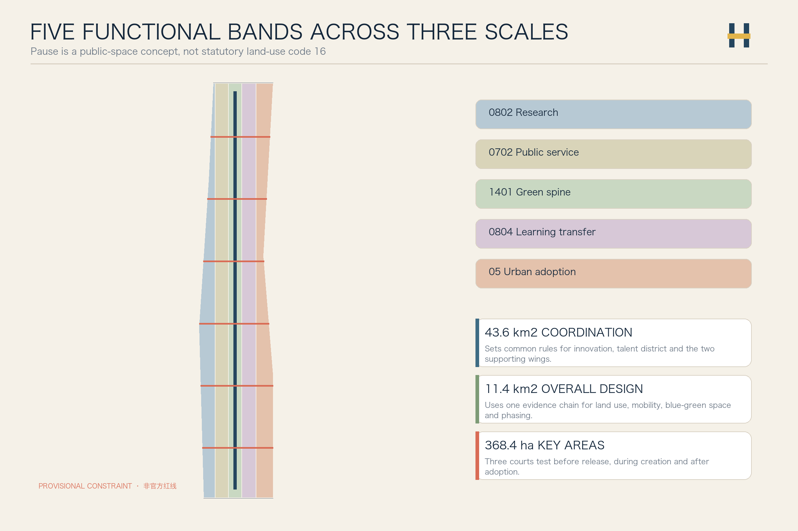
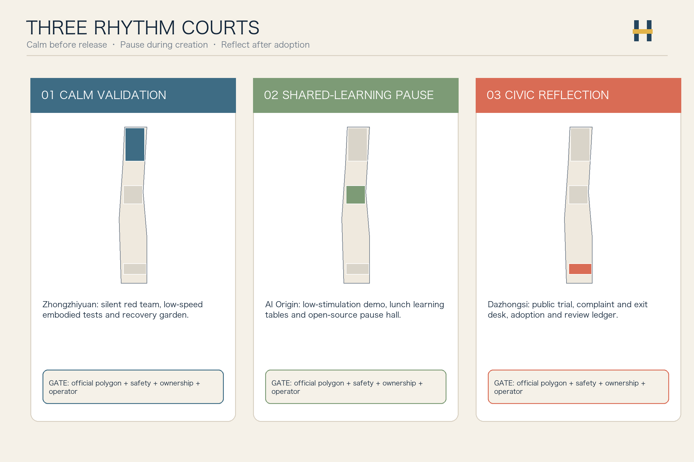
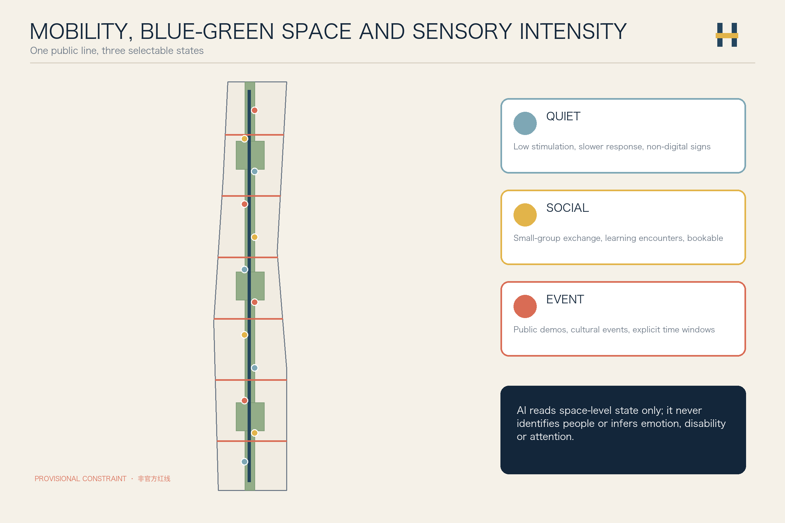
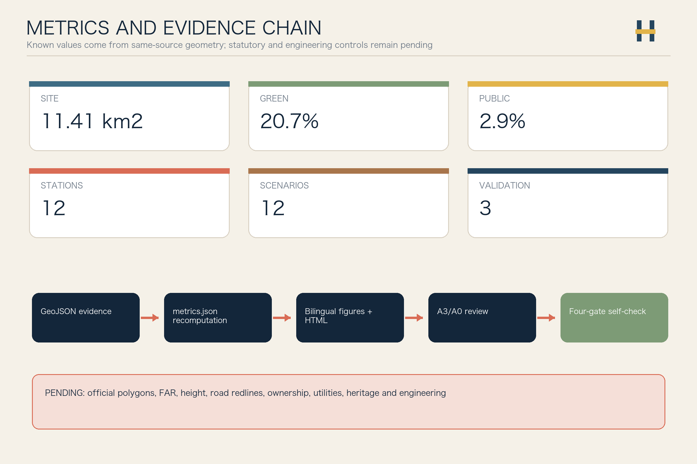

Jing-Zhang Pause Line — AI Urban Design for Sensory Choice and Innovation Rhythms
Keep computation running while allowing the city to pause: one slow-mobility pause spine, three rhythm courts, six transition crossings and twelve pause stations offer a choice of quiet, social and event intensity.
Jing-Zhang Pause Line / 京张留白线
Keep computation running while allowing the city to pause. “Pause” means selectable low-stimulation, stopping and reflection spaces. It is not statutory land-use code 16 and it does not ask innovation to stop.
Design Basis and Source List
The proposal begins with an urban-design judgment: a world-class AI district should improve research and adoption while letting researchers, residents, service workers and visitors choose quiet, social or event intensity. The Jing-Zhang heritage park can serve as the public frame for this innovation rhythm, but official polygons, regulatory controls, building surveys, ownership and utility baselines are unavailable, so every placement remains a recomputable concept for professional development 来源 来源 深度.
Repository Issue #846 records a material background risk: the provisional design polygon may not align with public mapping of the heritage park and the named boundary streets. This proposal neither redraws a redline from that evidence nor promotes OSM to formal authority. Every board shows the provisional polygon as a faint dashed constraint used only for the current machine checks 来源 来源 空间数据.

Three-Level Scope Framework
The coordinated research area frames common rules for the innovation ecosystem and talent district. The overall design area organizes one pause spine, three rhythm courts, six east-west transition crossings and twelve pause stations. The three key areas test a complete chain: calm validation before release, shared-learning pause during creation, and civic reflection after adoption 标准 深度 空间数据.
“One line, three courts, six crossings and twelve stations” is not a new redline. Five topology-safe functional bands represent research, public service, green spine, learning transfer and urban adoption; the three key areas remain repository provisional constraints and must be regenerated when official polygons arrive 空间数据 空间数据 深度.

Coordinated Research Area: Industry and Future City Research
The name “Jing-Zhang Pause Line” uses two railway rails interrupted by a breathing joint. Deep rail blue signals engineering trust, moss green public life, signal yellow human confirmation, and warm copper the century-old railway. Signage states quiet, social and event modes with color, words and tactile symbols, without enterprise logos, portraits or restricted fonts 来源 标准.
Six international cases compare mechanisms only: Kendall Square links innovation development with public review 来源; one-north provides a work-live-play-learn reference 来源; Smart Kalasatama demonstrates resident co-creation and agile pilots 来源; Barcelona Superblocks shows streets shifting from throughput to public life 来源; New York POPS makes public-access obligations visible and inspectable 来源; Toronto Quayside links development with public benefits and inclusive public realm 来源. No foreign metric, zoning power, investment or governance authority is transferred.
The five required functions form an auditable loop. Zhongzhiyuan focuses on full-stack technology and safety validation; the AI Origin Community on open-source collaboration and talent learning; Dazhongsi on public adoption and international exchange. The Zhongguancun wing supplies legal, capital, talent and IP services, while the Xiaoyuehe wing supplies public scenarios and resident feedback. Every AI scenario moves through calm assessment, small-group discussion, public activity and archived reflection rather than using popularity as proof 深度 标准.
Overall Design Area: Urban Renewal and Regulatory-Plan-Level Urban Design
The land-use layer covers the provisional boundary without gaps or overlap using legal codes 0802 research, 0702 community service, 1401 park green, 0804 education and 05 commercial service. “Pause” is an operating and public-space concept; it does not misuse statutory code 16 or claim an approved land-use change 标准 空间数据 深度.
Eighteen conceptual building carriers follow an R-A-I method: verify what can be Retained, prioritize Adaptation, and study Infill only after official surveys. Without building, ownership, FAR, height, heritage and utility data, the layer makes no demolition decision and does not present conceptual footprints as construction volume 空间数据 深度 深度.
Renewal starts at the ground interface: movable seating, shade, drinking water, accessible signs, quiet hours and visible reservation rules; next come the six cross-connections and transit interfaces; buildings and engineering are deepened only after formal data are available. FAR, height, road area and total floor area remain pending official data 指标 指标 深度.
Detailed Design of Key Areas
The three rhythm courts are distinct public checkpoints in the AI maturity chain 空间数据 空间数据 深度.
| Key area | Design role | Spatial move | First conceptual projects | Preconditions |
|---|---|---|---|---|
| Zhongzhiyuan Calm Validation Court | Pre-release validation | Low-stimulation review rooms, low-speed embodied-AI test loop, green meeting edge | Silent red-team room, audible-intent robot test, researcher recovery garden | Official polygon, safety, river, roads and network conditions |
| AI Origin Shared-Learning Pause Court | Reflection during creation | Campus-park walking links, open shared-learning tables, quiet/discussion dual-mode rooms | Open-source pause hall, cross-disciplinary lunch table, low-stimulation demo | Ownership, building survey, fire and event permits |
| Dazhongsi Civic Reflection Court | Post-adoption review | Station waiting realm, public trial, complaint and exit desk, cultural events | Civic adoption forum, AI service review wall, quiet night route | Station, roads, utilities, commerce and heritage review |

The three pilgrimage and honor nodes are the Centennial Waiting Hall, Origin Pause Court and Dazhongsi Reflection Platform. They display the question, test conditions, failure records, responsible human and current status; a submission is not presented as selected, and a pilot is not presented as implemented.
AI Innovation Ecosystem, Personas, and AI+ Scenarios
The six personas are high-intensity researchers, neurodivergent users, residents and older adults, service and maintenance workers, students and young developers, and international visitors and event organizers. Personas express public spatial needs only. No sensor may infer an individual's attention, emotion, disability or mental state 来源 空间数据 指标.
| # | Scenario card | Space and users | AI role | Human and rights boundary |
|---|---|---|---|---|
| 01 | Low-stimulation wayfinding | Entire line; sensory-sensitive users, visitors | Suggest quiet/social/event routes only after explicit choice | No diagnosis inference or personal trajectory log |
| 02 | Public seat status | Twelve stations; residents, workers | Report aggregate available-space state | No face recognition or individual dwell analysis |
| 03 | Research recovery scheduling | Zhongzhiyuan; research teams | Flag conflicts between meetings and quiet periods | No health data; team confirms manually |
| 04 | Audible robot-intent test★ | Zhongzhiyuan; robot teams, pedestrians | Test whether non-speech cues are understandable | Enclosed low-speed trial; safety officer can stop immediately |
| 05 | Multimodal accessible-signage test★ | Origin; users with varied sensory and mobility needs | Combine tactile, text, light and sound cues | Affected users participate; accessibility expert releases |
| 06 | Privacy-preserving sound-environment test★ | Origin; public-space operators | Extract anonymous level and frequency statistics only | No voice storage or speaker recognition |
| 07 | Cross-disciplinary lunch table | Origin; students, developers | Match tables by public topic | Explicit opt-in; no talent scoring |
| 08 | Low-stimulation public-service mode | Service points; older adults, families | Simplify interface and extend response time | Human counter remains permanently available |
| 09 | Civic adoption forum | Dazhongsi; firms, residents | Summarize support, opposition and disagreements | Raw comments inspectable; human moderator concludes |
| 10 | Quiet night route home | Dazhongsi-community; night users | Aggregate public lighting and opening information | No individual tracking or crime conclusion |
| 11 | Jing-Zhang waiting-history guide | Heritage public space; visitors | Source-traceable station and innovation narrative | Historical and copyright review by humans |
| 12 | Global Urban Rhythm Week | Entire line; international teams, communities | Multilingual agenda and venue conflict alerts | Event, safety and copyright approvals item by item |
The three starred cards are industrial validation scenarios. Twelve cards, three validation tests and twelve spatial stations are recomputed by 指标, 指标 and 指标. AI reduces spatial conflict and expands choice; it does not compete for attention or decide who “needs rest.”
Land Use, Building Scale, and Retain-Renovate-Demolish Strategy
Five topology-safe bands cover the same provisional polygon: research and validation, community service, green spine, learning transfer and urban adoption. They describe functional relationships, not approved land-use ratios 空间数据 深度 来源.
| Concept band | Code | Recomputable evidence | Boundary |
|---|---|---|---|
| Research and controlled validation | 0802 | 指标 | No enterprise or construction-volume commitment |
| Public service and shared learning | 0702 | 指标 | Does not replace public-facility planning |
| Jing-Zhang pause green spine | 1401 | 指标 | Not an official park redline |
| Learning transfer and talent exchange | 0804 | 指标 | Campus access requires ownership and safety confirmation |
| Urban adoption and reflection | 05 | 指标 | Commercial mix awaits regulatory planning |
Footprint area and conceptual building density only make the carriers auditable 指标 指标. Total floor area, FAR and height remain unknown 指标 深度.
Transport, Rail, Municipal Infrastructure, and Public Services
One north-south pause spine and six east-west transition crossings form the mobility structure. The crossings connect conceptual parks, campuses, communities and stations while gradually shifting between quiet, social and event intensity; every alignment awaits road-redline, transit-interface, flow and accessibility surveys 空间数据 指标 深度.
The six crossings are recomputed from the road layer 指标. Road area and ratio remain unknown because conceptual lines do not create official sections 指标 指标.
Municipal and digital services follow four rules: space-level state, edge processing, minimal retention and human confirmation. Seats, sound environment, lighting and event capacity may produce aggregate state only; energy, drainage, fire, communications and compute capacity await official baselines 空间数据 深度 来源.

Blue-Green Network, Public Space, and Urban Character
The green spine and three rhythm courts form the public-space frame. Twelve pause stations cycle through quiet, social and event modes; each provides non-digital signs, sitting and leaning surfaces, wheelchair and stroller space, shade, water and human help. Sensors support space maintenance and never identify people 空间数据 空间数据 深度.
Green and public-space areas come from geometry unions. Their ratios are concept-package readings rather than statutory green-space or public-space controls 指标 指标 指标.
The character system draws from rail, station, waiting and signal: continuous deep-blue twin lines are a public commitment, warm copper ticks record history, signal yellow marks human confirmation, and moss-green nodes mark places to stay. Building color, massing and height await official controls; the proposal addresses ground interfaces and signs only 标准 指标.
Renewal Projects, Implementation Policy, and Phasing
| Project | Type | First move | Gate before scaling |
|---|---|---|---|
| P01 Pause signage sample | Signage/accessibility | Prototype the three intensities in text, color and touch | Accessibility, copyright and heritage review |
| P02 Twelve-station walk audit | Public space | Audit seating, shade, noise and lighting | Official boundary and facility baseline |
| P03 Calm Validation Court | Industrial validation | Isolated review room and enclosed low-speed test | Safety owner, network and venue permit |
| P04 Shared-Learning Pause Court | Education/talent | Lunch tables and low-stimulation demo | Ownership, fire and event permit |
| P05 Civic Reflection Court | Urban adoption | Public trial, complaint, exit and review ledger | Operator, grievance and maintenance mechanism |
| P06 Quiet night route home | Mobility/lighting | Public-information audit and temporary signs | Traffic, lighting and safety review |
| P07 Centennial waiting history | Culture | Licensed oral history, archives and movable exhibit | Historical, copyright and heritage review |
| P08 Global Urban Rhythm Week | Long-term operation | Small public-program prototype | Approval, safety, communication and budget |
The three phases are Measure Rhythms First, Connect Spaces Second and Deepen Construction Last. Official data, rights impact, professional safety and public reflection gate every scale-up; phase areas prove coverage only and do not claim a government schedule 空间数据 深度 深度.
The phase readings are 指标, 指标 and 指标. A reference annual cycle is spring problem collection, summer controlled testing, autumn civic adoption and winter public reflection; names, dates, funding and organizers are not confirmed.
Metrics, Area Recalculation, and Compliance Matrix
The submitted site area is recomputed from the provisional polygon and recorded separately from the announced approximate 11.4 square kilometres 指标 指标. Key-area count and areas are supported by 指标, 指标 and 指标; the third area is 指标.

compliance_matrix.json covers announcement sections 1.3, 1.4 and 1.5 plus agent.1–agent.6. standard_matrix.json covers mandatory professional references. design_depth_matrix.json connects existing conditions, land use, buildings, mobility, utilities, blue-green space, key areas, projects, phasing, metrics and risks to evidence 深度 标准.
Known metrics describe only same-package evidence. Unknown metrics preserve null values and release conditions. The visual HTML uses the exact values in metrics.json, while A3/A0 PDFs and five figures derive from this submission's geometry, metrics and matrices.
Risk, Copyright, and Compliance
The largest spatial risk is provisional-boundary precision and location; the largest governance risk is turning sensory inclusion into automated inference of attention, emotion or disability. The first is addressed through faint boundary graphics, whole-chain regeneration triggers and Issue #846 disclosure. The second is addressed through no individual-state inference, space-level data only and a permanent human route 来源 深度 空间数据.
The proposal does not claim official approval, adopted planning, final ownership, final development volume, engineering feasibility or confirmed events. The architectural design-depth reference without an official cleared file remains a registered gap and is not used as formal authority 标准 来源.
Text, geometry, figures, HTML and PDFs were originally generated by Codex for this submission. The package uses public web pages and cleared repository materials only, with no commercial tiles, news images, company logos, portraits, remote fonts, CDN or tracking. Licenses, access dates, permitted uses and limits are recorded in sources.json and report/copyright_statement.md.
References
- Project announcement, Agent taskbook, site package and source registry 来源 来源 来源
- Provisional boundary and three key areas 来源 来源
- International cases are mechanism references limited by
A-CASE-TRANSFER-001来源 来源 来源 - Public-space and civic-adoption cases 来源 来源 来源